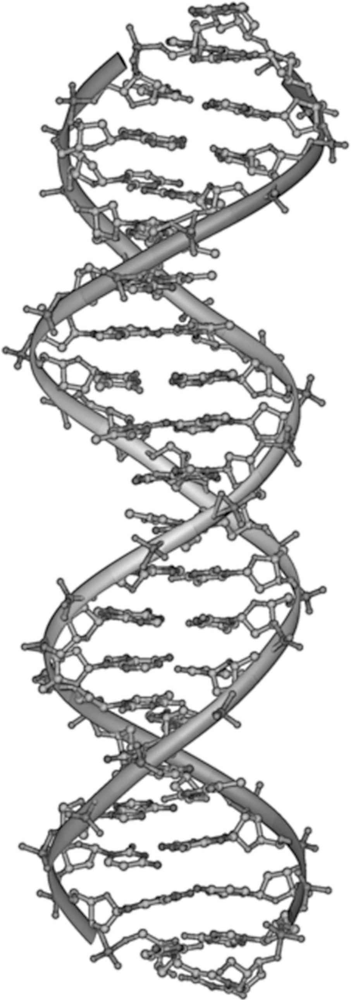
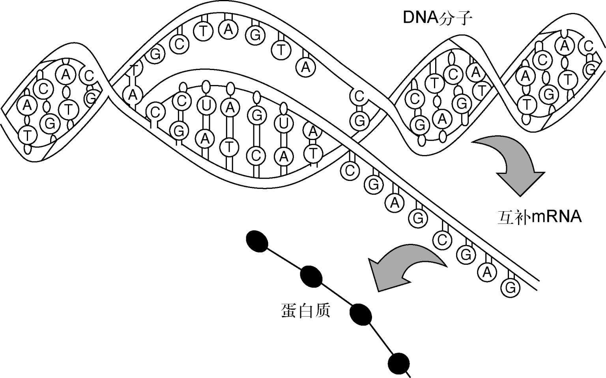
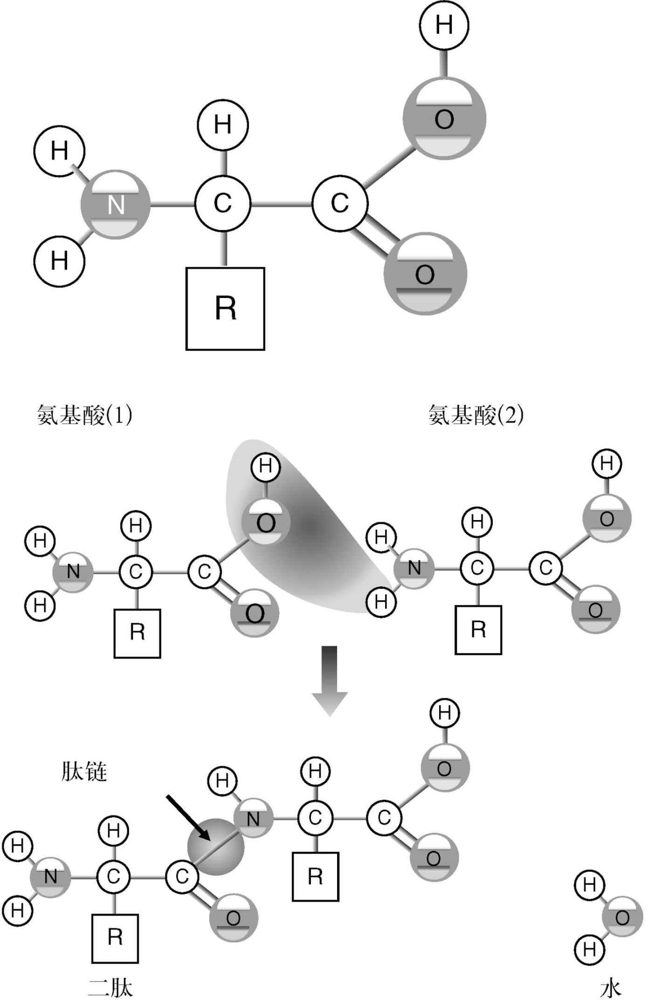
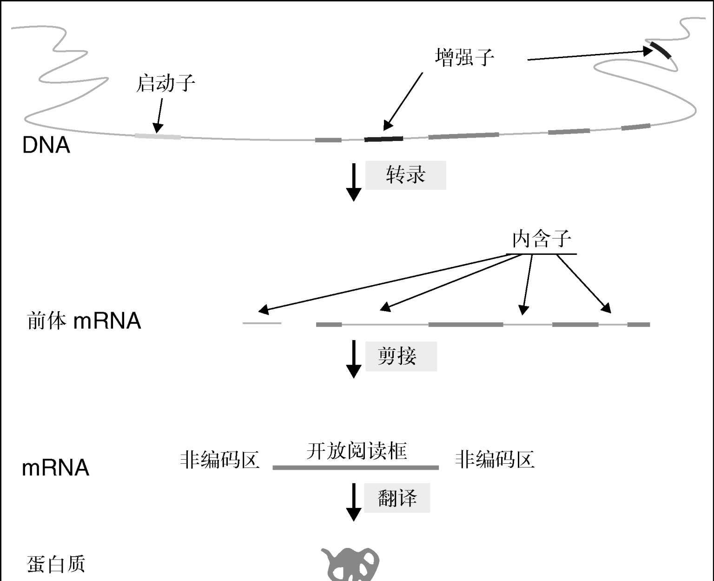
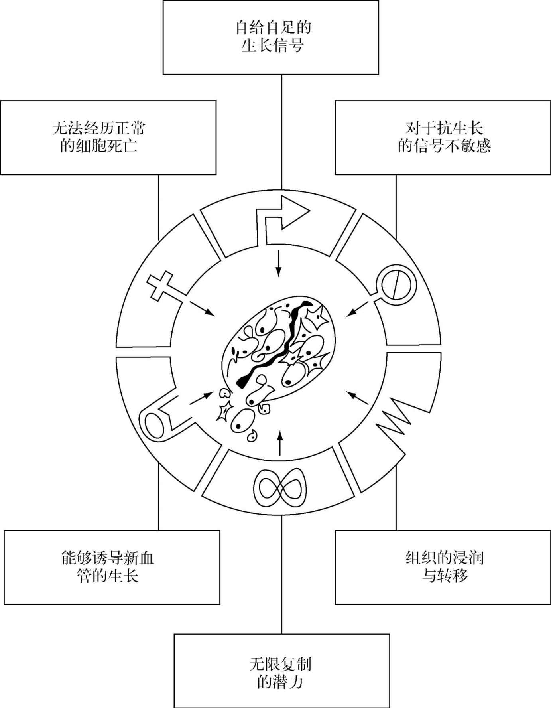
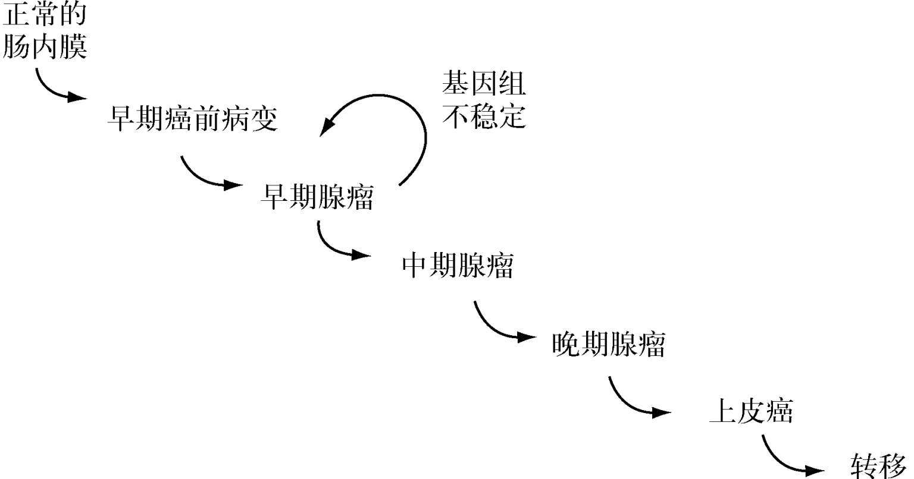
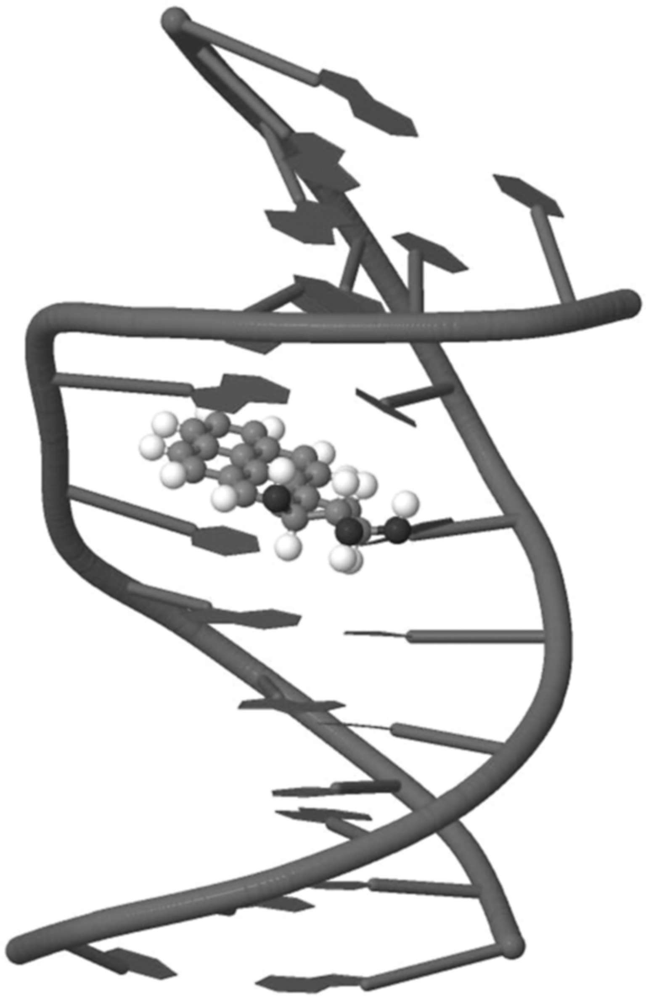

为理解癌症的发展，有必要了解一点细胞生物学的基础知识。细胞是所有生物的基本组成部分。从酵母菌这种最微小的生物到最庞大的蓝鲸，全都由细胞组成，人体也一样。某些动物——如酵母菌——是单细胞的；包括我们在内的其他动物都是由不同类别的很多细胞组成的，包括血液、骨骼、大脑、肾脏，诸如此类。有机体的所有细胞都有其精心控制的生命周期。该周期的控制一旦出现问题，癌症就发生了，导致一群细胞不受控制地生长，它们可以扩散到体内的其他结构并造成破坏。本章重点讨论癌症的发展，以及理解这一历程所需的基础生物学知识。我还会阐述对于病因的理解是如何能够用来确定治疗策略的。
就理解肿瘤 [2] 而言，细胞的关键部分是细胞核，那里有包含基因密码的脱氧核糖核酸（DNA）。图9是DNA分子的示意图。DNA受损导致异常的、不受控制的细胞生长，这是肿瘤发生的根本原因。值得注意的是，尽管不同细胞的外观和功能或许迥然不同（例如神经细胞、肌肉细胞以及血细胞等），特定有机体内的所有细胞却共享着相同的DNA密码。DNA聚集而成的长链被称为染色体，每个人类细胞里都有23对染色体。在每条染色体中，基因排布在DNA上，每个基因编码产生一种蛋白质。我们可以把基因和染色体想象成一座图书馆，23对染色体中的每一对都是一个独立的卷册，21 000个基因中的每一个都是该卷册中的一页说明书。在概念上很容易理解一页说明书的损坏何以导致细胞性状的改变。本章将历数这些不同结构的功能和相互作用，以及它们何以出错，从而导致某种肿瘤的发展。
每个人的生命都始自一颗受精卵，它首先发育成一团相同的细胞，然后逐渐生长、编组、发育成一个完整的复杂个体。细胞从这个初始的群组发育成高度专门化的亚型的过程是大自然最绝妙的复杂过程之一，但它却在我们的周围和体内不断发生。这显然需要一个错综复杂的制衡网络。它需要相邻细胞之间的交流，以确保在适当的时间遵循正确的发育路径。它需要以最少的中断来清理和消除不再需要的细胞［这个过程称作细胞凋亡（apoptosis），源自希腊语，意为“花瓣的脱落”］。随着器官的发育，它们必须发展自己的血液供应并加以维护，以应对损伤。它需要各器官系统彼此交流，例如神经要与它们所控制的肌肉联系。内分泌（激素）腺体要加以协调，才能周期性（如卵巢）或是应激性（如肾上腺）地产生其产物。这是随着每个器官系统的生长和发育，以协同的方式通过基因的打开或关闭来实现的。一旦生长过程结束，动物成形，就必须维持各个组织，修复损伤，并持续综合管理——供应和加工养分，清除废物，如此等等。我们越是思考所有这些任务令人叹为观止的复杂度，就越是感叹此事非同寻常：整个过程在大多数人身上如此可靠地运作了这么多年，而肿瘤——从本质上说就是不受管制的细胞分裂——的发生频率却并未升高。
DNA的结构和功能
如上所述，遗传密码储存在人体细胞的23对染色体里。每一条染色体都由一个很长的DNA分子组成，其中包含着基因，点缀着间隔序列。每个基因的两侧都是DNA区域，控制某个特定基因的开启或关闭。例如，肌肉细胞的关键组分肌凝蛋白的基因编码会在需要的地方——肌肉中——开启，在其他不需要它的组织比如神经细胞中关闭。开关网络显然对于调控细胞行为非常关键，对这些控制的研究是癌症研究的主要内容——如果控制失灵，细胞就会毫无节制地生长，肿瘤发生时就是如此。
为了理解细胞如何行使所有这些功能，有必要多了解一点DNA的结构，以及嵌在DNA分子中的密码如何被翻译为最终产物，即功能有机体。DNA是脱氧核糖核酸的缩写。1953年，克里克和沃森发现了DNA的双螺旋结构，早在这一著名的发现之前，人们就已经知道它含有遗传密码了。DNA分子（图9所示）是交互排列的两个组件所形成的一条长脊，这两个组件分别是一种糖（称作脱氧核糖）和一种磷酸基团，后者连接着腺嘌呤、鸟嘌呤、胞嘧啶和胸腺嘧啶四种所谓的碱基分子（简称A、G、C、T）。这些碱基沿着DNA分子的脊排列，形成了A—T和C—G相互连接的两组互补配对。DNA的双螺旋性质来自（正链或正意的）一股和与之互补的反意股相匹配，A与T配对，C与G配对，以此类推。如此一来，A—T对和C—G对就构成了维持DNA双链的双螺旋结构的“胶水”。结合过程的互补性质意味着如果把两条链分开，每条链都用作两组新链的模板，就能得到与起初那个DNA分子完全相同的两个副本。

图9 DNA的结构
DNA可以制造与自身完全相同的副本这种固有性质，是地球上所有生命的基本特性之一。从最简单到最复杂的，所有生命都非常严格地保留了DNA的结构。复制过程同样极其精确。错误率如此之低，以至于需要很多世代才能累积出显著的差异——遗传“漂变”率——这也是演化生物学的基础之一。回到遗传学的“图书馆藏书”这个比喻上来：细胞每一次分裂，都必须把全部23对各卷册以及其中的21 000个基因（信息的“书页”）“逐字”记录。有时，一个逗号、字母或句号会发生打字错误。在大多数情况下，就像在书中一样，这种错误不会改变意义，但有时会发生重大改变，从而导致子细胞携带了改变（称作突变）后的功能。顺便提一下，随机的微小差异数量可以在进化树上追查，如此便可估计某一对特定的物种是何时开始分化的。
基因，以及基因表达的控制
基因是组成DNA的基本单位。一个基因包含了一种蛋白质的密码。蛋白质可以具有多种功能，从结构性的功能，例如一种构成细胞内部“骨架”的名为微管蛋白的蛋白质，到运作性的功能，例如形成可收缩的肌肉的部分。DNA中的信息借以转录为一种（RNA里的）讯息，随后转录到某种单一的蛋白质之中，这一信息流正是生物学的核心概念之一。
蛋白质是细胞的重要组件，负责所有的重要活动。诸如脂类和糖类等其他构件都是作为蛋白质活动的结果而生成的。因此，蛋白质显然必须具有一系列的功能。这些功能包括：在细胞内部和细胞间传送信号；充当结构（一种微观的脚手架）；以及有一种非常重要的蛋白质——酶，这种蛋白质作用于其他的生物分子，促使新分子的形成。这个过程可以是毁灭性的，比如分解食物的消化道分泌物（以及洗衣粉！）中的酶；也可以是建设性的，比如参与为细胞制造新分子的酶。
基因产生蛋白质的过程涉及基因转录成细胞核内的一种信使核糖核酸（mRNA）分子。RNA分子的结构与DNA相似，但在关键方面有所不同。首先，主链中的脱氧核糖（DNA中的D）被核糖（RNA中的R）所代替。其次，该分子是单链的。最后，胸腺嘧啶（T）碱基被尿嘧啶（U）所代替，但配对保持不变。
为了制造RNA，DNA的双螺旋临时“解开”形成两条单独的链。随后组装出一个互补RNA并将其运出细胞核，进入细胞质，DNA链再次合上。这个过程被称作转录（如图10所示），是生物学的另一个重要部分。
一旦进入细胞质，这个信使RNA就必须被转化成蛋白质，这是嵌在DNA中的密码被翻译成功能性蛋白质的第二个重要部分。第二种RNA——称作转运RNA——提供了信使RNA和蛋白质构件之间的联系。这个翻译过程的关键之处在于嵌在DNA中的三联体密码。蛋白质和DNA一样，都是由更简单的分子链组成的。蛋白质的构件被称作氨基酸，可以连在一起，形成实际上无穷无尽的长链。基本的氨基酸分子有三个要素——被称为羧基端和氨基端（因此得名），加上赋予每一种氨基酸其独特性质的可变侧支（图11中表示为R）。

图10 转录
尽管理论上存在无穷数量的氨基酸，但在活的生物体中只找到了20种。DNA密码是以名为密码子的三联体排列的。A、T/U、C和G可以组成64种可能的三字母密码。每一个三联体都有特定的含义，既可以指代一种氨基酸，也可以实际上形成一种标点符号。例如，在这个密码系统中，AUG的意思是“从这里开始”（称作“起始密码子”）；UAG、UGA和UAA的意思是“在这里结束”；其余的部分都与特定氨基酸有关联——例如，半胱氨酸是UGU或UGC。因为三联体密码有64种可能的组合，却只有20种氨基酸，所以某些氨基酸有不止一个三联体密码。因此，显而易见，改变了单个碱基的突变可以从根本上改变最终的蛋白质。例如，从UGC（半胱氨酸）变成UGA（停止信号）会让最终得到的蛋白质变短，其功能也可能发生重大的变化。

图11 氨基酸与蛋白质的结构
如上所述，基因的核心密码伴随着复杂的调节机制（见图12）以确保基因在适当的时间开合。在癌细胞里，往往正是这种基因功能调节机制出现了缺陷。
基因表达的调节需要一系列复杂事件的相互作用。为了理解这一点，我们需要更详细地了解一下基因结构（见图12）。

图12 基因的结构与功能
基因编码区域的两侧是控制区。正如前文讨论过的编码区突变那样，基因调节或信使RNA的加工所发生的变化如何导致了某种蛋白质过度生成或生成不足，或是产生了带有某种不良性质的异常蛋白质，就很容易理解了。这些控制区域本身也受到名为转录因子的其他基因的调节，这些转录因子可以像控制音量一样提高和降低基因的表达。转录因子是整个过程的主要调节者，因此涉及肿瘤的很多基因事实上都来自这一族蛋白质，也就不足为奇了。
肿瘤的特征
介绍完这个机制的基础知识后，我们现在就来看看这些过程会出现怎样的错误，从而产生肿瘤。2000年，道格拉斯·哈纳汉和罗伯特·温伯格这两位一流的细胞生物学家发表了一篇题为《肿瘤的特征》（“The Hallmarks of Cancer”）的开创性论文，总结了哪些变化是肿瘤产生的充分必要条件。肿瘤细胞与正常细胞的不同之处在于，它可以不受管制地分裂。此外，肿瘤细胞有能力扩散到和侵袭身体的其他部分。哈纳汉和温伯格总结了细胞在从细胞社会遵纪守法的正常成员变成逍遥法外的危险分子时，必然发生在细胞内部的过程。如图13所示，这些变化的特点是：
●自给自足的积极生长信号；
●缺乏对抗生长信号的响应；
●无法进行“程序性的细胞死亡”，以便清除有缺陷的细胞；
●规避免疫系统的破坏；
●能够在其他组织中生长并破坏性地侵袭后者；
●能够通过产生新的血管来维持生长。
前两个特点算是不言自明，并导致了不受管制的生长。第三个就不那么明显了，它与发育过程有关。如果所有的细胞都只是生长和分裂，举例而言，那就绝无可能形成诸如消化道或血管这样的中空管道结构了。为了做到这一点，根据结构发育的需求，必须把某些细胞清除出正在生长的有机体。前面提到过，这个过程被称为细胞凋亡，是一个重要的细胞功能。细胞凋亡也是有机体用来摆脱有缺陷或功能异常细胞的手段，例如那些寿限将至、需要替换的细胞。肿瘤细胞顾名思义是异常细胞，所以本应自行了断。如此说来，无法进行细胞凋亡是从异常细胞转变为能够无限复制的细胞的关键。细胞凋亡的另一个特点是，被化学疗法或放射疗法损伤的细胞常常不是当场死亡，而仅仅是“身负重伤”。随后的细胞死亡往往是由细胞凋亡实现的，表明就算在肿瘤细胞内，规避的机制也并未彻底关闭。然而，对细胞凋亡的抗性提高是肿瘤细胞避免化疗或放疗破坏的一种方法（见第三章）。因此，理解细胞凋亡自然是癌症研究的主要领域之一。

图13 肿瘤的特征
肿瘤的其他明显特点是它们能够生长并侵袭体内其他组织，同时还能避免自身遭到免疫系统的破坏。免疫系统可以被看作一种细胞警察，它们能识别细菌等入侵者并加以清除。既然肿瘤细胞是异常细胞，免疫系统应该能识别并毁灭它们。因此，规避这一过程对肿瘤至关重要。如前所示，细胞、组织和器官的生长和发育都经过了非常精密的调节，以确保有机体内那些正常的细胞在适当的地点和时间生长。肿瘤生长的一个重要方面便是获得了在错误的地点生长的能力，这是区分恶性和良性肿瘤的一个特征，后者也会生长，却不会扩散或侵袭。应当注意的是，良性肿瘤也会有严重的后果，例如，听神经瘤是从内耳向大脑传递信号的听觉神经良性肿瘤。该肿瘤固然不会扩散到其他地方，但它会逐渐增大，导致耳聋和平衡的问题。
肿瘤的最后一个特征是形成新供血的能力。任何直径大于十分之一毫米的细胞的集合都需要血液供给。随着新肿瘤的生长，它就必然会获得刺激血管生长的能力。肿瘤的血管生长往往杂乱无章，事实上它使用的是与维护正常血管无关的基因。
这个过程被称为肿瘤的血管形成，因为它不同于正常的血管形成，所以成为肿瘤药物开发的一个重要的靶子。如果有可能破坏肿瘤的供血，就可以阻止它继续生长。贝伐珠单抗（安维汀）是新一代靶向分子疗法中最成功的药物之一，就是针对这个过程来发挥作用的。
癌变——癌症是如何开始的
如前所示，如果发生了肿瘤的特征所需的那些变化，就会导致癌症。为了理解癌症的发展，我们现在要谈一谈外部因素是如何引发癌症的——这个过程被称为癌变。从本质上说，肿瘤是DNA受损的结果，从而导致了上文所述以及图13所示的变化。因此，所有破坏DNA的因子都是潜在的致癌物，即导致癌症的诱因。但反之则不然；本身有助于致癌的因子并不一定会直接破坏DNA，尽管在这个过程结束时总是如此。并非直接破坏DNA的致癌物质的例子包括酒精，以及会引发乳腺癌和前列腺癌的性激素等。致癌物有很多种，其中一些是众所周知的——例如吸烟和电离辐射。以吸烟为例，我们知道，在一般情况下，吸烟多年才会导致癌症发展。这表明癌变过程既缓慢又可能有多个步骤。我们从前文的讨论可以预测，必然有多组基因发生突变，才会导致哈纳汉和温伯格描述的标志性变化。这一事件链也是在1990年代初提出的，如今往往称之为“福格尔斯泰因级联”，链条上的每一步都代表了一个新的突变（图14）。
福格尔斯泰因博士的小组研究了遗传性肠癌，在这种癌症的患者身上可以识别出一些公认的癌前（又称恶性肿瘤前）阶段。他们从患者身上采集了一些组织，着手识别在从正常的肠道内膜到临床上明显的肿瘤这一路径上，哪些基因在这许多阶段中发生了异常。结果证明，对于级联中每个阶段的发生，所需破坏的候选基因都是可以识别出来的。后续工作表明，尽管具体的基因和破坏的次序不同，但类似的事件级联适用于所有的肿瘤类型。

图14 福格尔斯泰因级联
研究患有所谓“遗传性”癌症的家族，是识别基因的一种富有成效的方式。这个术语不太恰当，因为癌症可不是钻石项链之类的传家宝，也就是说，它不能作为一个原封未动、完好无损的物件传承下去。所遗传的是某种疾病在生命早期发展起来的高风险，这种疾病往往以非常夸张、极具侵袭性的形式爆发。有一种这样的疾病叫腺瘤性结肠息肉（APC）。此病的患者从幼年便开始长出多个良性肿瘤。一段时间以后，某些良性肿瘤发展成癌症，不加治疗的话，一般会在40岁出头死于肠癌。对该病患者的研究表明，他们的一个特定的基因出现了异常，该基因被命名为APC。识别这些患者体内的APC基因引发对该基因功能的进一步研究，证明它的功能就像一个“关闭键”。如果该基因失去效能，就移除了细胞生长的一个重要制约，腺瘤也就形成了。与遗传性癌症通常出现的方式一样，更加常见的非遗传性癌症也有相似的异常情况。对非遗传性肠癌的研究证实，这些散发的病例中，APC基因功能失效的约占80%，因此，该基因显37然在调节肠道内膜的正常生长方面起到了关键的作用。
于是，对遗传性癌症的研究往往会为非遗传性的对应疾病提供重要的线索。对这些“癌症家族”的研究有助于识别像APC、Rb（与一种罕见的儿童眼部肿瘤——视网膜母细胞瘤有关）、p53（与李—佛美尼综合征 [3] 有关，该病患者会发展出多种不同的肿瘤），以及VHL（与一种包括肾癌在内的复杂疾病冯希佩尔—林道综合征 [4] 有关）这些与癌症有关的关键基因。此外，考察遗传性疾病各不相同的自然历史，有助于我们理解这些基因的正常功能应该是什么。上述的所有基因都被称为“肿瘤抑制者”基因，但这个词并不恰当，因为这并非它们在有机体内的主要作用。从APC基因便可预测，这些基因都是细胞周期的关键调节者（上文提到的前两个特征），功能的破坏或消除会导致不受控的生长。考察这些基因的正常功能为了解细胞周期的调节提供了重要的线索。正如缺乏对细胞周期的控制是肿瘤的一个特征，很多癌症治疗都是通过干预在肿瘤细胞内哑火的细胞周期基因起效的。此外，新一代癌症药物——靶向分子疗法——目前正进入临床阶段，成为新闻头条（见第三章）。这些药物之所以有效，正是因为它们针对的是已知在肿瘤中会哑火的特定分子。
然而，并不是遗传性癌症的所有基因都会直接参与细胞周期。一个很好的例子就是VHL基因，它最初是在冯希佩尔—林道综合征患者身上识别出来的。患者在幼年便出现多种异常病症，包括神经系统的囊肿，特别是在小脑（大脑中负责平衡和协调的部分）、脊髓和视网膜中，同时伴随良性和恶性的肾脏肿瘤。肾脏肿瘤通常是对称多发的，并且发生自幼年。至于APC，患者会遗传到一个无功能的基因；对余下基因的一次打击便可让细胞内再没有能够发挥作用的VHL蛋白质。肾脏肿瘤相对罕见，但在VHL综合征患者中很常见，这告诉我们，某种特定基因遭受一次打击的概率相当高，但遭受两次打击的间隔却要长得多，因此，散发肿瘤都是单独出现的，且发病的年龄晚得多。
对VHL基因的详细研究表明，它参与感知了细胞内的氧含量。如果氧含量低，便会向周围细胞发送信号，开始生长新的血管。换句话说，它调节了血管的形成，这是肿瘤的一个重要特征（见图13）。进一步的研究表明，这些变化足以推动试管里的肿瘤细胞生长，而在这些模型中置换VHL基因就会逆转细胞的肿瘤特征。此外，在VHL综合征患者中发现的肾脏肿瘤类型叫肾细胞瘤，从该基因的功能便可预测，血管中显著富含肾细胞瘤。对散发（非遗传性）肾细胞瘤的研究表明，VHL基因在大约70%的病例中都突变了，这使得VHL基因/血管形成的路径成为诱人的治疗靶子。肾脏肿瘤一旦扩散就出名得难治，对基于VHL基因的新型疗法的研究则卓有成效：从2006年以来，有六种药物获得批准，还有好几种治疗某一疾病的药物正待获批；在过去的25年里，只有两种治疗此病的药物获得了许可。所有这些药物都把上文总结的遗传学研究所识别的路径当作攻击目标。
非遗传性癌症
尽管遗传性癌症为与癌症有关的基因类别提供了重要的线索，但大部分癌症病例却并非明显的遗传倾向所致。正如我们在第一章看到的那样，全世界癌症死亡的主要病因是肺、胃、肝、结肠以及乳腺的肿瘤。在这些癌症中，肺癌与吸烟密切相关，而肝癌则与乙型肝炎病毒感染有关，饮酒也扮演了重要角色。消化道癌症被认为与饮食有关，但明确的因果关系仍不甚了了。同样，乳腺癌（以及男性的前列腺癌）显然与饮食和激素因素有关。这些形形色色的影响是如何产生了上述变化，引发了癌症呢？
肺癌是环境中的致癌物相互作用而引发癌症的最好理解的例子。风险显然与吸烟量——存在着一种剂量效应——以及持续时间有关。吸烟者在患癌之前戒烟，戒断之后，患癌的风险会持续降低。根据福格尔斯泰因级联这样的模型，吸烟一定诱发了级联的第一阶段，而持续吸烟也必然会引发后续的阶段。在癌变的旧模型中，初始阶段往往被称为肿瘤生长的起始期，后续阶段被称为肿瘤生长的促进期，而最终阶段被称为癌化。这些术语仍有价值，在实验室里，使用药剂把非恶性的细胞生长变成肿瘤细胞的过程通常被称为细胞转化。对吸烟的分析表明，有很多药剂会在细胞培养系统中导致转化。对这些烟草成分的详细研究揭示了发生作用的精确分子机制，其精确程度直达与DNA双螺旋的相互作用模式。罪魁祸首之一被称为苯并芘，仔细研究表明，它会与DNA螺旋结合，破坏其结构。图15显示了与DNA双螺旋结合的苯并芘分子。

图15 与DNA结合的苯并芘
如上所述，在最终的癌变事件把癌前损伤变成成熟的肿瘤之前，显然需要破坏DNA——这一初始事件之后，一般是进一步破坏逐渐累积的延长期，有时被称为促进期。在烟草这个例子中，这个过程似乎是由持续吸烟推动的，具有直接破坏DNA的性质。对于其他疾病，特别是乳腺癌和前列腺癌，推动者的角色是由个体自身的激素扮演的。正如第一章所指出的，乳腺癌的风险受到乳房受周期性雌激素刺激的时间的影响——因此，初潮较早、孕次较少且没有母乳喂养都会导致风险升高。由此推论，月经周期引发的乳房持续的周期性变化放大了某种形式的环境致癌物造成的任何对DNA的初始破坏。在前列腺癌中也可以看到类似的结果，与很可能接触了同样的环境致癌物的同龄人相比，幼年时期遭到阉割的男性（例如太监）患前列腺癌的风险非常低。酒精在肝癌中起到的作用也与之相似。如前所述，酒精不是直接的致癌物——它不会破坏DNA。然而，长期酗酒会诱发肝脏的损伤和修复周期，从而促进了细胞更新。就像乳房的周期性变化一样，这种不断增加的活动放大了必然存在的DNA损伤因子所造成的伤害，增加了DNA进一步累积损伤的机会，促成了癌症的发展。
如第一章所述，就肝癌而言，我们也已对最常见的致癌物——乙肝病毒感染——了如指掌。这种疾病在全世界都是一个巨大的痛苦来源，但在中国和亚洲其他地区尤甚，那里有高达10%的人口长期感染。印度和中东的感染率较低，而欧洲和北美的感染率则低于1%。长期感染的风险在那些婴儿时期便感染的人群中最高。自1982年起，乙肝疫苗已经问世。很多国家实施了多年的疫苗计划，才使科学家完成了一种病毒和癌症之间联系的最终试验——如果这种联系是因果性的，防止感染就应该也确实能预防这种疾病。病毒导致癌症的确切分子机制仍在研究之中，但就像吸烟一样，当前的因果证据足以令人信服。
接下来讨论另一种与感染有关的癌症——宫颈癌，可以看到相似的故事呼之欲出。1920年代人们发现，宫颈癌在性伴侣较多的女人中更常见，特别是妓女，而修女中则非常罕见（除了那些此前性事频繁的修女之外），这指向了一种性传播的感染性病因。1976年，哈拉尔德·楚尔·豪森证明，这种疾病与人乳头瘤病毒（HPV）感染有关。楚尔·豪森博士在生殖器疣和宫颈癌中均发现了HPV的DNA。他因为这一发现以及在该领域的后续工作而获得了诺贝尔医学奖，其研究显示了这种病毒和癌症之间确切的分子学联系。该病毒生成了与Rb和p53两个基因相互作用的各种蛋白质，这两个基因都是细胞周期的关键控制器，为肿瘤的产生提供了一条明显的路线。
针对HPV的疫苗研发（从而可预防宫颈癌），是比HBV疫苗更大的技术难题。然而，长期病毒感染和癌症之间的联系让宫颈癌癌前阶段的研究成为可能。人们发现，用木制刮片从子宫颈取得细胞涂片，随后在显微镜下检查，就可以对癌前阶段加以识别。名为宫颈上皮内瘤样病变（CIN）或原位癌（CIS）的癌前阶段识别促成了预防性的治疗。欧洲和北美大多数国家都有基于子宫颈涂片检查的全面筛检。据估计，这些计划拯救了数万人的生命。最近，一种针对与宫颈癌有关的各种HPV变体的疫苗在2006年面世，并作为防止感染的一个手段，开始出现在女孩的公共卫生疫苗计划之中，从而降低了癌症的风险。关于这种疫苗出现了一些争议，有人将其解读为防范性乱交风险的一个手段。然而，防范一种性传播疾病并不会降低人类感染免疫缺陷病毒（HIV）等其他疾病的风险。此外，该疫苗可以保护女人免于其伴侣此前的性乱交风险，毕竟她们对此毫无控制能力。但这种效果要等10到20年才能看到，因为这是HPV感染和癌症形成之间一贯的时间差。